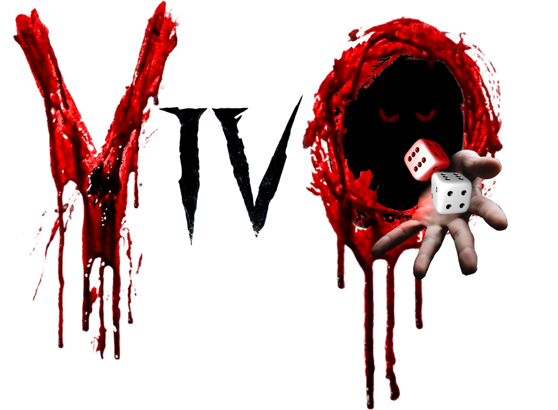

En VivO controlas a un personaje que debe recorrer
un tablero maldito dividido en múltiples casillas con
diversos minijuegos donde cada paso te costará años
de vida. Podrás apostar años de vida en juegos de azar
y comprar distintos dados pero evita no sacar por tu
bien el número 4.
Victor Román Román
Daniel García Andrés
Marcos Solano Pascual
Marcos Tedín Cueto